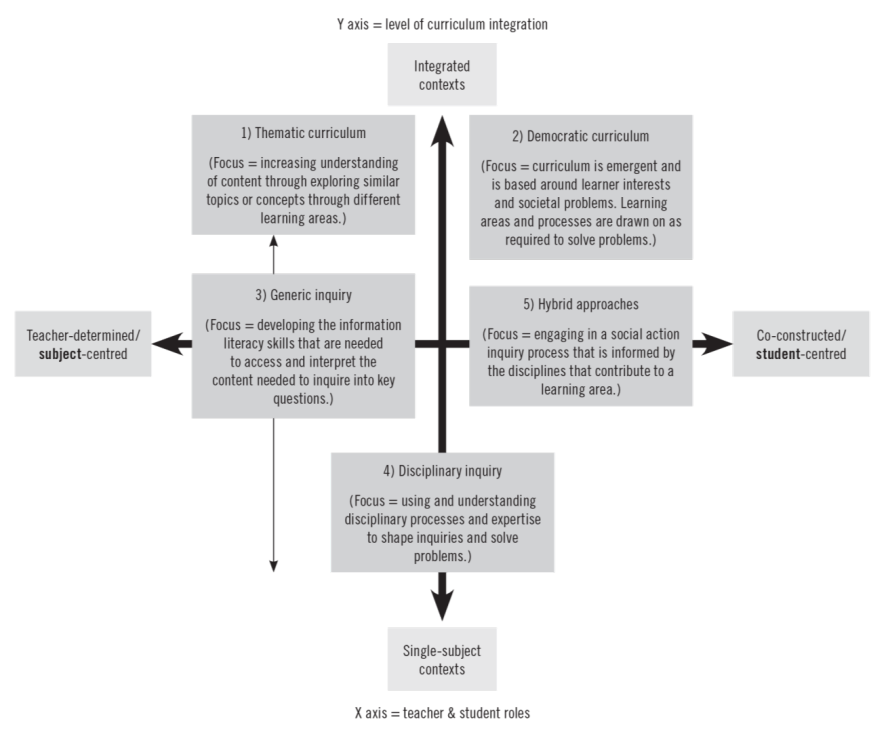

2.5 The Politics of Curriculum
| ⬅️ | ➡️ |
|---|
Sections:
2.5 The Politics of Curriculum
- 2.5.1 Section Overview
- 2.5.2 What is Curriculum?
- 2.5.3 Twenty-First Century—Future-Focused Education versus Powerful Knowledge
- 2.5.4 The New Zealand Curriculum and National Certificate of Educational Achievement
2.5.1 Section Overview
In this section, I begin with the question What is Curriculum?, and review the literature on curriculum, and its relationship to pedagogy and assessment in the Western educational currents of the last 100—150 years. I discuss the unavoidably political nature of curriculum theory and how that manifests in what is often presented as an irreconcilable opposition between the traditional disciplinary Collection and the progressive transdisciplinary Integrated curriculum types. In Aotearoa New Zealand curriculum policy is enacted through the New Zealand Curriculum (NZ Ministry of Education, 2007) (NZC) and the National Certificate of Educational Achievement (NCEA) accreditation system. The section closes with a review of how these two instruments have evolved over the last twenty years without resolving their inherent disciplinary–transdisciplinary tension.
2.5.2 What is Curriculum?
Introduction to Curriculum and Curriculum Theory
Curriculum generally refers to the knowledge included in teaching and learning programmes, that is considered of most worth (Spencer, 2009, p. 5), within a certain locale and cultural setting. A curriculum is normative and inescapably value-laden. The unavoidably political nature of curriculum design has been well-recognised since at least the 1990s. As Pinar et al. (1995) observe:
Today no serious curriculum scholar would advance the argument that schools in general and curriculum in particular are politically neutral. Yet the political neutrality of school curriculum was a commonplace assumption in the pre-1970s literature.
(p. 244)
Spencer’s short answer to the question What knowledge is of most worth? was — science (2009, p. 6). Whereas Spencer may have understood knowledge as being about an objective and progressively discoverable reality, John Dewey, writing in the 1930s, had a transactional, less content-oriented, and more cross-curricular understanding of knowledge and curriculum (Biesta, 2014). In stark contrast to Dewey’s transactional view of curriculum was Ralph W Tyler’s instrumentalist and utilitarian approach which set out four fundamental questions to guide curriculum construction:
- What educational purposes should the school seek to attain?
- What educational experiences can be provided that are likely to attain these purposes?
- How can these educational experiences be effectively organized?
- How can we determine whether these purposes are being attained?
(Tyler, 1949, p. 51)
Tyler, unlike Spencer, and potentially in harmony with Dewey’s democratic ethic of education, made it clear that it was not his role to answer these questions, writing No attempt is made to answer these questions since the answers will vary to some extent from one level of education to another and from one school to another (1949, p. 51). Tyler was also more moderate in his view of the influence of disciplinary specialists on secondary school education, on the grounds that the objectives they propose are too technical, too specialized, or in other ways are inappropriate for a large number of the school students (p. 56). He suggested that rather than preparing students for later advanced studies in their particular fields, curriculum specialists at this level of education should focus on the question:
What can your subject contribute to the education of young people who are not going to be specialists in your field; what can your subject contribute to the layman, the garden variety of citizen?
(Tyler, 1949, p. 56)
While Tyler’s questions one and two are equivalent to what knowledge is of most worth?, questions 3 and 4 are more suggestive of a scientific prescriptive approach to curriculum design foregrounding assessability and accountability. Quinn (2019, p. 4) describes the predominant Tyler Rational as leading to a linear, predetermined, pre-set curriculum. Tyler’s view of curriculum dominated the latter half of the 20th century and its neo-Tylerian successors continued to dominate in the first two decades of the 21st century (Bailey et al., 2019), although to a decreasing extent.
The influential American curriculum theorist William F. Pinar, like Dewey, stresses subjectivity and the immediacy of the student-teacher relationship in education. What is worth learning for Pinar is what leads the student to self-formation. Pinar devised the method of currere to underscore a concept of education as self-formation through academic study (Pinar, 2012, p. 24). Currere is the verb form of curriculum and means the running of the course. Currere positions curriculum as the study of the relations between academic knowledge and life history in the interests of self-understanding and social reconstruction (p. 25). Currere reimagines curriculum as something more akin to a personal spiritual journey than Tyler’s seemingly algorithmically determined sequence of discipline-based educational experiences.
The relationship between disciplinarity and interdisciplinarity is particularly relevant for a metacurriculum that places such an intrinsically transdisciplinary, cross-curricular objective as Sustainable Wellbeing at its heart. The metacurriculum must be able to address local and global Sustainable Wellbeing issues without being distracted by the epistemic priorities of disciplines. Disciplinarity and interdisciplinarity are required complementary elements in curriculum development, as Morris concludes:
The relationship [between disciplinary and interdisciplinary work] is often depicted as an opposition, a paradox, or a dichotomy, … Close inspection of boundary crossing Disciplinarity and Interdisciplinarity reveals that disciplinarity and interdisciplinarity are productive tensions in a dynamic supplement, complement, and critique.
(Klein, 1996, cited in Morris, 2017, p. 199)
For the SWM, all approaches to knowledge and forms of pedagogy remain at the service of humanity’s Sustainable Wellbeing, but they cannot claim the status of a superior means of educating in their own right. Knowledge of Sustainable Wellbeing is the knowledge of most worth.
In the following sections, I explore how the apparent opposition of Subject-Based Specialist (SBS) and Cross-Curricular Holistic (CCH) oriented curriculum designs features in the ideological debates between their proponents, and how the complementarity of this false dichotomy might be realised in actual school timetables which integrate the two curriculum modalities. First, though, it is necessary to clarify, if possible, the distinctions among the various forms of not-strictly-disciplinary teaching that appear in the literature, and their relationship to traditional secondary school subjects.
Forms of Cross-curricularity.
As Mård and Klausen (2023b) observe, crosscurricular teaching is an approach traditionally characterized by terminological unclarity. A bewildering variety of terms and concepts are used, partly to express different conceptions or describe different types of teaching, partly reflecting different traditions and terminological habits (p. 7). Some commonly used terms include Student Inquiry, Curriculum Integration, Interdisciplinary, Multidisciplinary, Cross-Curricular, Transdisciplinary, Transcurricular, Bildung, and Holism, any or all of which could be used within the scope of an SWM.
Based on their study of integrated curriculum and student inquiry in primary and secondary schools, up to years 9 and 10 (14 and 15-year-olds), Boyd and Hipkins (2012) devised a two-dimensional diagram to contrast and compare five different typical approaches, as reproduced with permission in Figure 2-11. The vertical dimension of their diagram represents the level of curriculum integration (i.e. from single subject below to multi-subject integrated contexts at the top). The horizontal dimension represents a continuum of Teacher and Student roles from Teacher-determined/subject-centred on the left to Co-constructed/Student-centred on the right. Boyd and Hipkins (2012) note they found no examples of integrated or inquiry approaches in the literature that were purely student-directed.
Figure 2-11 One view of the intersection between integrated and inquiry approaches (Boyd & Hipkins, 2012)

Of the five approaches to Integrated Inquiry Boyd and Hipkins (2012) describe, their Democratic Curriculum, at the top right of their diagram is closest to the SWM’s CCH mode while Disciplinary Inquiry at the bottom centre is closest to the SWM’s SBS mode. James Beane’s definition of curriculum integration is perhaps the best known. Beane defines curriculum integration as:
… a curriculum design that promotes personal and social integration through the organization of curriculum around significant problems and issues, collaboratively identified by educators and young people, without regard for subject area lines.
(Beane, nd, cited in Boyd & Hipkins, 2012, p. 19)
In this definition, students’ concerns about self and society are established first and then woven together in themes such as living in the future or conflict. Curriculum areas are drawn on as they become useful for a study (Beane, 2002, cited in Boyd & Hipkins, 2012, p. 19). The Democratic Curriculum is in stark contrast with the Thematic Curriculum approach—in the top left of Figure 2-11 — where the focus is on increasing understanding of subject content through exploring similar topics or concepts across learning areas, with no regard to the social significance of the themes. For example, concepts such as sustainability or topics such as dinosaurs are considered equally educative if they can be used by two or more subject areas simultaneously to further their separate subject-based content priorities.
Disciplinary Inquiry, which is the closest of these five Inquiry-based approaches to the SWM’s SBS mode, was founded by Jerome Bruner and others in the 1960s. Bruner, like Dewey, favoured learning by doing but within a disciplinary context. The term scaffolding — meaning the guidance teachers provide in supporting students' cognitive development toward becoming independent learners — originated with Bruner (Boyd & Hipkins, 2012). Critics of the approach point out that just doing a science investigation won't mean that students discover knowledge-building conventions in science without expert guidance (p.21). In contrast also to the SWM’s SBS mode, Disciplinary Inquiry does not appear to include explicit teacher-led instruction as a powerful available pedagogical strategy when judiciously and appropriately used.
Like Boyd and Hipkins (2012), Thorburn (2017) makes his main distinction about approaches to non-disciplinary versus disciplinary approaches based on whether the focus of the teaching is on cross-curricular themes at one extreme or the priorities of individual disciplines at the other. Both authors put Dewey and Beane’s Democratic curriculum at the highest level of curriculum integration but whereas Boyd and Hipkins (2012) contrast the Democratic curriculum integration with Disciplinary Inquiry. Thorburn (2017) contrasts it with interdisciplinary enquiry. The former, he writes, is based on accommodating and assimilating new holistic experiences in shared social contexts, relative to the latter where the focus is on recognising to a greater degree the disciplinary status of subjects (p. 247).
Of particular relevance to the SWM are the meanings attached to the terms theme-based/thematic. Mård and Klausen (2023b) distinguish between the typical primary school use of themes and their related but deeper treatment of thematic practices in high school in a way that is consistent with Thorburn’s(2017) understanding. Theme-based or thematic, they write:
Refers to a more intensive way of working with a common theme, and the subjects involved need to be carefully selected to essentially deepen the understanding of the theme and to itself be better understood through application to the theme.
(Mård & Klausen, 2023b, p. 14)
Closer still to the holistic ideal envisaged for the co-construction of the SWM subdomains are project-based; problem-based; and phenomenon-based practices that fall under the heading of transcurricular teaching. Ideally, such practices will be tied to the commitment of the whole school community to ongoing projects, such as the school garden and healthy school meals programme, the restoration of, and care for, local wildlife habitats, or long-term missions such as energy self-sufficiency, net zero campus carbon emissions, and zero waste to landfill. Projects around social well-being in the local community, contributing to local government planning, and cultural projects aimed at improving race relations and envisaging a future of greater sustainable wellbeing, mean that teachers from all disciplinary backgrounds could and ideally need to be involved in the CCH mode, most likely working in teams. Holism for Mård & Klausen (2023a):
… refers to the need of decompartmentalizing education to help students explore phenomena from the viewpoints of multiple subject perspectives. The ideas of authenticity and contextuality accentuate the importance of exploring real-world phenomena existing within tangible time and space, rather than engaging with only theoretical or hypothetical ideas. Through problem-based inquiry, students explore the phenomena by identifying and investigating possible problems.
(2023a, p. 15)
The CCH mode of the SWM effectively gives Sustainable Wellbeing the status of a pandisciplinary epistemic structure in its own right. As argued in Section 2.2, Climate Change is a symptom of humanity’s disconnection from nature, from social justice and from itself. Climate Change is a sign of how urgently we need to address the inadequacy of our existing sophisticated dominant anthropocentric worldview. Allowing Climate Change education to be addressed by individual subject areas in isolation could lead to an underestimation of its significance, and a lack of clarity and fragmentation in its teaching (Eilam, 2022; Sjöblom et al., 2023). As discussed in my Introduction, the same argument applies to Education for Sustainable Wellbeing.
Bernstein’s: Collection vs Integration Curriculum types
Thus far I have focused on clarifying how I use the various terms for cross-curricular teaching that appear in the literature, as they relate to the CCH mode of the SWM. Now I turn to the role of the SBS mode of the SWM and the challenge of bringing the two modes into a productive complementary relationship within the secondary school timetable.
Bernstein (1975) identified a fundamental axis for curriculum design as lying between two broad types of curricula, Collection and Integration (p. 71). The Collection type is most closely related to what I have called the SBS mode of the SWM and the Integration type is closest to the CCH mode, but neither fits simply into Bernstein’s schema. Bernstein (1975) characterised the essential distinction between the Collection and Integration types of curricula in terms of two properties he called Classification and Framing. Classification is the insulations, the boundaries between things, be they relationships internal to the individual, or external (p. 11). Framing refers to the form of the context in which knowledge is transmitted and received. Frame refers to the specific pedagogical relationship of teacher and taught, and the strength of the boundary between what may be transmitted and what may not be transmitted, in the pedagogical relationship (p. 80). Hence Classification is equivalent to Boyd and Hipkin’s (2012) dimension of level of curriculum integration and Framing to their dimension of Teacher and Student roles in Figure 2-11.
For Bernstein (1975), the Collection type curriculum has strong Classification and Framing while the Integration type has weak Classification and Framing. The SWM is more complex. As it emerged in this study, the SWM SBS mode is also likely to have strong classification and framing relative to the SWM CCH mode given their complementary roles, yet in sync with the needs of the CCH lessons at the same year level, not insulated from them; something like Boyd and Hipkin’s (2012) Generic or Disciplinary inquiry.
The CCH mode courses and lessons—given the fractal structure of the SWM Domains and Subdomains—will be weakly classified in disciplinary terms but clearly ‘navigable’ for teachers and students in terms of the SWM framework while their framing is likely to vary fluidly within and between lessons according to the development of each course and its domain context; somewhat like a variable mix of Boyd and Hipkin’s (2012), Generic inquiry and Democratic curriculum. SWM CCH mode Courses/Teaching Units did not appear to be examples of thematic or hybrid curricula in terms of Boyd and Hipkin’s (2012) diagram. The Thematic curriculum, while integrating, does not appear to prioritise socially significant themes over its main priority of subordinating the themes and to its coordination of multidisciplinary learning objectives. The Hybrid approaches encourage socially significant themes but only among the subjects within learning areas, rather than across the curriculum, as subdomains of the SWM are likely to require.
2.5.3 Twenty-First Century—Future-Focused Education versus Powerful Knowledge
Harmonising Integrated and Collection types through enabling constraints
Berstein (1975) sees the Collection and Integration curriculum types as social structures that are necessarily in conflict, with the latter being a deliberate attempt to transform the former. The first favours analysis, while the latter prefers synthesis. From an SWM perspective resolving the conflict between the Collection and Integration curriculum types—between the SBS and CCH modes of the school timetable—is fundamental to its reason for being and at the heart of my main research question. How is this to be achieved? One line of approach to this question is to consider each modality’s weaknesses and to address those fallibilities using the principle of enabling constraints from Complexity theory.
Bernstein lists four conditions that an integrated curriculum must fulfil if its openness is not to degenerate into a sense of purposelessness and dislocation in time and place for faculty and students. These conditions would have to be met by the CCH mode of the SWM to maintain its coherence but also a coherent complementary relationship with the SBS mode. They are:
1. There must be some consensus about the integrating idea if it is to work at all and the idea must be made very explicit.
2. The nature of the linkage between the idea and the several contents must be systematically and coherently worked out.
3. A committee system of staff and pupils has to be set up in order to develop a sensitive feedback control on the whole endeavour.
4. Of greatest importance, very clear criteria of evaluation must be worked out.
(1975, p. 75)
What might a similar list of conditions look like for a Collection-type curriculum if its closedness is not to degenerate into rigid disciplinary silos and an experience of irrelevance, anxiety and loss of agency for faculty and students in the face of the accelerating global poly-crisis? John Dewey’s attitude toward disciplinarity provides useful insights. The claim that the value of traditional educational practice lies simply in its being disciplinary, is an error in two ways, according to Dewey (1916). First, the claim has been used to shield disciplines from critique and useful revision:
It has not been enough to show that they were of no use in life or that they did not really contribute to the cultivation of the self. That they were disciplinary stifled every question, subdued every doubt, and removed the subject from the realm of rational discussion.
(Dewey, 1916, p. 85)
Second, the claim has contributed to a counterproductive association of discipline with an ascetic-like application of will or agency, to tasks and learning that are of no immediate interest or relevance to the student, rather than enthusiasm for achievable desirable outcomes. From the perspective of power relationships, classification and framing, this understanding of discipline can further degenerate into being no more than training in uncritical compliance. From this pedagogical standpoint:
Application just for the sake of application, for the sake of training, is alone disciplinary. This is more likely to occur if the subject matter presented is uncongenial, for then there is no motive (so it is supposed) except the acknowledgement of duty or the value of discipline.
(p. 85)
Criticism of these counter-productive expressions of discipline should not be taken to mean that willful application to challenging tasks, hard work, practice and learning predicated on the achievement of future goals is of no educational value, only that those goals should be visible and meaningful to the student. From a twenty-first-century teacher’s perspective, such punitive approaches to discipline through curriculum may seem to belong to a dark and distant nineteenth-century past. The challenge of achieving student engagement through intrinsic motivation remains however and the twenty-first-century practice of motivating students extrinsically through credits for standards-based assessments does not necessarily come any closer to Dewey’s ideal form of acquiring discipline through enthusiasm.
What list of conditions then, ought to be placed on Collection-type curricula and thus also on the SWM SBS mode? In Section 7.3.4 I return to this question to offer an answer in light of this study’s findings.
SRPK learning and curriculum
In this section, I briefly explore the political ideological struggle between the conservative and the progressive curriculum traditions as it has emerged in the twenty-first century. The conservative tradition is represented by the Social Realist—Powerful Knowledge (SRPK) school of thought, and the progressives by the Twenty-First Century—Future-Focused (21CFF) school. I argue that the battle between these views is not only counter-productive and unnecessary but it is also a distraction from bringing the particular strengths of both approaches to effectively and systematically address our shared Sustainable Wellbeing crisis through centring socially significant themes such as Climate Change.
Social realism has developed as a perspective amongst some sociologists of education over the last twenty years out of their concern that crucial issues around the organizing principles of knowledge, its production and change were being ignored in educational research (Hoadley et al., 2019). The term Powerful Knowledge (PK) was used by Michael Young (2009, p. 195) to distinguish the abstract, objective nature of academic school knowledge from everyday, context-bound, non-school knowledge. The more crucial distinction for the initial concerns of social realism, however, is in distinguishing PK—something which is powerful regardless of who possesses it — from the Knowledge of the Powerful (KOTP), i.e. the idea that the existing school curriculum represents the interests of those with power (Muller & Young, 2019, p. 197). The children of the powerful get access to the sort of knowledge that keeps their families powerful and those of the disadvantaged will access knowledge that keeps them disadvantaged. From the SRPK point of view, PK is based on objective knowledge with well-established procedures of verification, while an opposing 21CFF view of knowledge is subjective and relativist informed only by postmodern and post-structuralist epistemology.
Consequently, a PK curriculum recognises that understanding of disciplinary knowledge requires that the curriculum be organized according to the epistemic structures of concepts in academic disciplines (McPhail & Rata, 2016). PK is consequently specialized and there exist definite, but not fixed boundaries, between disciplines and subjects which define their focus and objects of study. From an SRPK perspective, the organising principle of the 21CFF curriculum is located outside the concepts in the form of themes, topics, and projects rather than in disciplinary-based subjects (McPhail & Rata, 2016, p. 55, emphasis in the original). The social justice assertion and issue for proponents of the SRPK school is that students are sorted according to their perceived academic ability into either the PK academic or 21CFF everyday streams. All students, they maintain, are entitled to access PK and denying that access on the grounds that they are not interested or find it too difficult [is] disturbing (Young, 2013, p. 114).
Young and Muller (2010) use a three futures scenarios schematic for differentiating the traditional positivist academic Tylerian (Young & Muller, 2010) model of curriculum (future 1) from the 21CFF model (future 2), and both from their ideal SRPK (future 3) model. Future 1 represents an 'under-socialized' epistemology that defines knowledge as sets of verifiable propositions and the methods for testing them (p. 14. Emphasis in the original). Subject boundaries are given and fixed. Subjects’ associated social production processes (classification and framing) are implicit and unexamined. Future 2 represents an over-socialised view of knowledge that ends disciplinary boundaries, de-emphasises the propositional character of knowledge and reduces questions of epistemology to ‘who knows?’ and to the identification of knowers and their practices (p. 14). In contrast to both futures 1 and 2, future 3 sees;
knowledge as involving sets of systematically related concepts and methods for their empirical exploration and the increasingly specialised and historically located communities of enquirers with their distinctive commitment to the search for truth and the social institutions in which they are located
(Young & Muller, 2010, p. 14 emphasis in the original)
Students should be made aware that the frontiers of knowledge are dynamic and that the disciplines are continually challenging existing ideas, updating them, and creating new knowledge. Boundary maintenance in this future is seen as “prior to boundary crossing and the variable relation between the two is the condition for the creation and acquisition of new knowledge” (p. 16). Young and Muller’s three futures scheme has proven both productive and popular (Morgan et al., 2019). The SRPK project has become a distinctive research tradition in the United Kingdom, South Africa, Australia, and some Latin American and European countries (Deng, 2020, p. 2).
In Aotearoa New Zealand, the 21CFF school of thought spread rapidly and significantly influenced the development of the New Zealand Curriculum (NZC) (NZ Ministry of Education, 2007). Since 2010, when New Zealand schools were required to have fully implemented the NZC (Schagen, 2011), interest in the SRPK-type curriculum from New Zealand-based scholars has increased (Johnston, 2022; Lipson, 2020; McPhail & Rata, 2016; Morgan et al., 2019; Rata, 2021; Rata et al., 2019) and now in 2024 has begun to influence educational policy directly since the change of government at New Zealand’s 2023 general election (McLauchlan, 2024). In his critique of New Zealand’s Innovative Learning Environment (ILE) model for school classrooms, Johnston (2022) explains that ILEs were conceptualised in part as a vehicle for enacting a radical constructivist ‘21st-century learning’ curriculum and an associated ‘self-directed learning’ pedagogical approach (p. 6). Johnston’s critique is informed by the SRPK perspective on curriculum which he explains;
is explicitly at odds with 21st-century learning. Even so, it is not precisely a traditional curriculum philosophy, either; it explicitly recognises the risk inherent in the teaching of epistemic disciplines of an ‘under-socialised’ view of knowledge that fails to recognise the different cultural capital that students bring to school.
(Johnston, 2022, p. 24)
While Young and Muller’s Future 3 is poles apart from Future 2, the SRPK proponents face challenges in clearly separating the Future 1 traditional scenario from their Future 3 ideal (Morgan et al., 2019). The difficulties remain even though these authors distinguish Future 1 from Future 3 on both epistemological grounds—through the concepts of PK and KOTP which on closer examination may not be as distinct as they are presented (Beck, 2013)—and on social justice grounds, not by stated intent, but in terms of actual effect. The Future 3 approach has not solved the problem that most students cannot access Powerful Knowledge (Beck, 2013 cited in Morgan et al., 2019) due to what Young and Muller (2016, p. 159) term epistemic disaffection.
Addressing this challenge is seen by SRPK writers as a matter of solving pedagogical shortcomings and students' choices or perseverance rather than as involving any problems associated with their PK conception of the curriculum itself. This rationale begins to sound very like the attitude of disciplinary pedagogues criticised by Dewey (1916) for valuing discipline as a training of the will irrespective of the intrinsic interest of the student in the content. The challenge for social realists is to explain how academic knowledge seen as lacking relevance in the twenty-first century can be combined with a progressive pedagogy capable of engaging students in mastering that knowledge. Realising this engagement without lessening the level of cognitive demand is a major pedagogical challenge identified by many writers (Rata et al., 2019, p. 167). Perhaps the relevance of humanity’s sustainability crisis could guide teachers' and students’ engagement with knowledge, skills, and big ideas, regardless of the level of cognitive demand involved.
Arguably the strongest contribution of SRPK to curriculum theory is its view of the way powerful knowledge is constructed. PK is built as epistemic structures of ideas and concepts which develop;
by being connected to other ideas and the application of these ideas in a specialised practice. These other ideas connect as internal referents to build patterns of ideas or concepts that refer one to the other in increasingly complex ways.
(Rata et al., 2019, p. 166)
Systems of meaning are built which are bounded by their concepts’ self-reference within the system and also to other systems of meaning. This is a view of knowledge congruent with complexity theory. But then, Rata et al. (2019) declare in a distinctly contra-complex systems manner that The largest bounded system of meaning, which brings together concepts that can refer to one another in supportive ways, is the discipline itself (p. 166). Rata et al. (2019) allow that connections can be drawn between disciplines if required (p.166), but cross-disciplinary research and learning depend on discipline-based knowledge. McPhail (2018) describes meta-concepts such as sustainability or citizenship as being strong pedagogical frameworks for learning but not part of any disciplinary system of meaning or episteme. While I concur with McPhail's (2018) view of these meta-concepts’ pedagogical value I challenge his conclusion that for this reason, they cannot be the starting point for the exploration of specialist subject-based content and concepts. The fact that meta-concepts are not currently systematically linked to existing disciplinary concepts and epistemic structures does not mean it cannot be done.
In considering the disciplinary checks and balances of fit to reality testing, social realists overlook the limitations of these socially bounded procedures for making judgements of system-wide utility and relative value. For example, plastic packaging is a great fit for an economic system limited to the manufacturer-supermarket-households chain, but the relevant system for human and biospheric wellbeing includes the environmental sources and sinks for the extracted raw materials and all that long-lived eventual pollution. Disciplines, in limiting knowledge to knowledge that and knowledge how within their limited disciplinary domain, neglect the more engulfing and ultimately more relevant system-wide social questions of knowledge why, or why-not.
The last and perhaps most revealing aspect of the SRPK three futures scheme I will mention is its curious minimal reference to sustainability crisis issues that are a feature of the 21C future-focused curriculum. Young & Muller (2010) for instance, use the word sustainability only once in their original Three Educational Scenarios for the Future article, in a quote designed to illustrate the over-socializing trend in contemporary educational thinking. The social realists appear to be attempting to reclaim the word future, so evocatively employed by the Future-2-ists, and to define their version of the future as a continuation of Western civilization’s steady past progress, only now with a social conscience and an emphasis on disciplinary fallibility and self-correction processes. The attempted co-option of some of Young’s thinking and arguments by policymakers advocating for a subject-based curriculum suggests that there may be only minor differences between future-1 and future-3, at least concerning the defence of the subject curriculum (Morgan et al., 2019). While Social Realists seek to downplay the role of politics in the production of knowledge, other groups arguing for the return to a knowledge-based curriculum, such as the UK based ‘Academy of Ideas’ Morgan et al. (2019) argue, have a purposeful political agenda which frames ‘sustainists’ (i.e. those in favour of sustainability) as the ‘enemies of progress’ (p. 112). The SRPK attitude toward global sustainability issues is consistent with their view that schools are limited in what they can do directly about influencing political realities outside the school, but do have the opportunity, within the school, to more fairly give students access to this valuable knowledge resource (McPhail & Rata, 2016). Maintaining strong boundaries between schools and the wider community provides a rationale for not having to confront the sustainability crisis and the interdependence of its environmental, social, and cultural domains.
21CFF learning and curriculum
Twenty-First Century Future-Focused (21CFF) learning and curriculum could be described as the continuation of the twentieth-century progressive, integrated curriculum movement in education with a greater emphasis on preparing students for a future that no longer looks as predictable or manageable as it once was. According to the International Commission on Education for the 21st Century, chaired by Jacques Delors from 1993 to 1996, to meet the challenges of the twenty-first-century education must be organised around four pillars that align well with the SWM individual and inter-personal domains and their Integrating-Self attractor:
Learning to know, that is acquiring the instruments of understanding;
Learning to do, to be able to act creatively on one’s environment;
Learning to live together, so as to participate and cooperate with other people in all human activities; and
Learning to be, an essential progression which proceeds from the previous three
(Leicht et al., 2018, p. 90)
Bolstad et al. (2012, p. 1) describe 21CFF as not a fixed prescription or known formula but rather as an emerging cluster of new ideas, beliefs, knowledge, theories and practices. Six emerging themes of 21CFF in the Aotearoa New Zealand context are identified by the authors: personalised learning; new views of equity, diversity, and inclusivity; using knowledge to develop learning capacity; rethinking learners’ and teachers’ roles; continuous learning for teachers; and new kinds of partnerships and relationships between schools and community (in contrast to the SRPK insistence on strong boundaries between school and non-school knowledge). Knowledge is seen as valued for what it does, more like a verb, rather than (just) as content, more like a noun, a view of knowledge that resonates with Dewey’s pragmatism. A 21CFF curriculum is seen as more holistic involving integration and inquiry learning guided by vision, values, and principles that include the potentially rich learning opportunities provided by future-focused issues such as sustainability, citizenship, enterprise and globalisation (Boyd, 2013). The emphasis is on building students’, teachers’, and schools’ capacities to adapt to the rapidly increasing pace of change that is the reality of our immediate future and on the ability of students, teachers, and schools to contribute to knowledge development, without losing sight of the value of attaining that deeper, less transient knowledge and learning known as wisdom.
Accounts of the progress of the influence of 21CFF ideas on mainstream education tend to depend on which side of the progressive/traditional political divide the commentator identifies with and also on what aspects of the 21CFF programme they choose to focus on. Gilbert (2019) observes that even though “future-focused” rhetoric is everywhere in education, particularly in policy contexts, its effect on the knowledge schools teach and their systems has been superficial and the vast majority of educational research continues to focus on improving the effectiveness of existing educational practices (p. 262). In their study of national education systems in Singapore, China, Chile, Mexico, India, and the US state of Massachusetts, Reimers & Chung (2016) found limited evidence of large-scale implementation of twenty-first-century education.
Young and Muller (2010) on the other hand, described 21CFF education (their Future 2 scenario) as learner-directed trends, coupled with the wider introduction of digital technologies (p. 18), and see them as everywhere gaining ground in Europe and beyond (p. 18) despite meeting resistance from the forces underpinning the traditional, under-socialized subject bounded education (their Future 1 scenario). They associate this trend with the de-professionalisation of teaching at all levels and the de-specialisation of research. In New Zealand the advance of child-centred orthodoxy led by the Ministry of Education and parts of the “research” community (emphasis in the original), has been extraordinary by international standards, controlling the official discourse about schooling over the last 30 years, according to knowledge-based education advocate Briar Lipson (2020).
One of the main advantages of the 21CFF model of education claimed by its proponents is that it is intrinsically more engaging and likely to lead to persistent learning than the established disciplinary alternatives, including the SRPK model. Wan and Bi (2020), for instance, attribute Chinese school students’ increasing disaffection for science as they grow up through the grade levels, to the subject being too focused on its inert subject knowledge and not enough on its social implications. Anecdotal evidence for increased student engagement and learning certainly can be found. McDowall and Hipkins (2019) report that many teachers included in their study of 21C integrated curriculum considered that most (but not all) of the students they taught were more engaged in the approaches they were trialling than previous approaches and that this was particularly true for students who had previously struggled to engage in learning” (p. 5). A recently completed research project with Year 9 students at two Aotearoa New Zealand secondary schools developing the discourses and practices of different learning areas through a project on ecological sustainability (Matthewman et al., 2017) found evidence of positive shifts in students’ understanding and use of the targeted discourses and practices and their sense of sustainability identities* (McDowall & Hipkins, 2019, p. 12).
The Sustainable Wellbeing Metacurriculum as both Disciplinary and Cross-Curricular Holistic
The opposition between the conservative Disciplinary Collection and progressive Transdisciplinary Integrated types of curricula is long-standing and according to scholars like Bernstein (1975) and Young and Muller (2010), irreconcilable. The Sustainable Wellbeing crisis with Climate Change as its leading edge, in particular, presents us with a unifying sufficiently imperative challenge and demands educators find systemic ways to harmonise this polarity and enable a Sustainable Wellbeing metacurriculum to emerge. The challenge, I argue, requires the Disciplinary SRPK proponents to grant disciplinary status to EfSW which includes Climate Change Education and it requires the Transdisciplinary 21CFF proponents to put cross-curricularity, competencies, and collaboration to work, to develop the epistemological structure and pedagogies needed to support this emerging meta-theme.
The framing of Climate Change or Sustainable Wellbeing which includes Climate Change, as topics, issues, or themes which must be somehow squeezed into the already overcrowded curriculum is due to an epistemological flaw in their conceptualisation, Eilam (2022) argues. The fact that Climate Change and other future-focused ‘issues’ have remained on the margins of the curriculum is that there has been no coordinated plan to treat them as a learning area in their own right and teachers are not prepared to approach the subject with any confidence in their expertise or feeling of specialised professional ownership. If there were a need to choose one reason only for introducing CC as a disciplinary subject, Eilam writes, this would most likely be it (2022, p. 15).
Two further obstacles to the effective provision of EfSW are, first, its status regarding the amount of timetable space it is granted, and second, whether it is designated as a core or elective subject. Topics that are not specialised tend to be accorded low status within the curriculum and fewer hours within the timetable. Low-status topics tend to be elective and the lowest are crosscurricular (Ross 2000, cited in Eilam, 2022), crosscurricular being used here in the sense of serving as a common context topic across two or more high-status subjects. High-status subjects also feature more prominently in assessments for accreditation and are allocated more resources and teacher professional development (p. 15). Both these obstacles would be removed by establishing Sustainable Wellbeing Education as a discipline in its own right but then another two appear. As Eilam observes While disciplinary boundaries are always permeable and adaptable to new emerging understandings, some outline needs to be drawn as a circumference of the discipline (Young, 2013 cited in Eilam, 2022, p. 14). According Sustainable Wellbeing disciplinary status would be to deny its complex transdisciplinary scope. Sustainable Wellbeing experts cannot erect boundaries around their subject since there is nothing, by definition, that it does not impinge upon. As a corollary, if Sustainable Wellbeing education is delegated to a group of specialists, teachers in other disciplines are likely to see it as no longer any of their business. While the SWM proposal establishes Sustainable Wellbeing as a discipline in its own right it also encourages subject teachers to connect their discipline with the SWM domains wherever possible.
Like Eilam (2022), Sjöblom et al. (2023) also argue that *wicked8 problems such as Sustainable Wellbeing, and the implications of climate change cannot be adequately addressed by individual teachers in traditional subject-based curricula. In an approach convergent with that of Eilam (2022), but from the integrated curriculum type perspective, they recommend education addressing ‘wicked’ problems based on a transdisciplinary core curriculum. Noteworthy in the following extract is the effectively opposite meaning they attach to ‘crosscurricular’ compared to that assumed by Eilam (2022), in the previous paragraph;
Given their inherent complexity, wicked problems demand transdisciplinary approaches (e.g., Gibbs & Beavis, 2020; Kawa et al., 2021). Thus, conventional > education alone cannot deal with such challenges, prompting researchers to call for multi-, inter-, and transdisciplinary educational approaches (e.g., Evans, 2015; Wolf, 2022), which in the school context entail multi-, inter-, and transcurricular teaching – that is, crosscurricular teaching.
(p. 183)
Referencing the Finnish core curriculum for upper secondary school, they stress that a transcurricular approach encourages the development of students’ agency and;
can be realized as an optional thematic course designed locally and collectively by a team of teachers representing several subjects. Alternatively, a crosscurricular approach can be implemented by designing study units that include two to three existing courses from either the local or national curriculum that thematically work together.
(2023, p. 190)
As an example of a successful transcurricular climate change education project, Sjöblom et al. (2023) cite one large-scale year-long collaboration among high schools and universities that involved “more than 100 experts from the climate change, environmental ethics, biology, and geology fields” (p. 187) cooperating with teachers and students. However, within the context of existing already crowded traditionally structured, subject-based timetables there is no simple way to facilitate transcurricular teaching in secondary schools. As Sjöblom et al. (2023) observe:
An alternative for teachers is to collaborate with colleagues who teach other subjects and to discuss and plan the teaching together. However, collaboration and transcurricularity may be difficult to achieve for structural reasons such as unsuitable schedules and lack of time (Gullberg, 2022).
(p. 193)
The SWM’s CCH and SBS modes proposal is designed to overcome the shortcomings of both the purely disciplinary and purely transdisciplinary approaches to Sustainable Wellbeing Education. The SWM CCH mode grants Sustainable Wellbeing the status of a traditional high-status discipline by making it a core subject with a permanent reserved block of time in the timetable. The CCH and SBS timetable blocks are separated and made concurrent for all teachers and students. By keeping the two modes separated in time, scheduling clashes are avoided. The CCH mode can then also avoid the traditional content-isolating rule of disciplinary collections that “things must be kept apart” (Bernstein, 1975, p. 9) through its transdisciplinary fractal domain structure that follows the rule Things must be put together (1975, p. 9). To achieve this putting together, teachers from diverse learning areas discuss and plan the teaching together in teams and all, or most, of the specialist teachers are involved, in contributing to the CCH mode lessons as leaders and facilitators as required. The SBS mode allows teachers to then focus on their disciplinary speciality but since they would all be, or mostly, also involved in the SWM CCH mode courses and projects, they could, over time, develop a deeper understanding of exactly how their subject most effectively contributes to the whole-school, principle objective of education for Sustainable Wellbeing and which aspects of their subject-based content can best be covered and reinforced in the CCH mode lessons. This ideal of complementarity and mutual reinforcement between holistic and specialist epistemological perspectives is far from the current reality of New Zealand’s governing education arrangements which I turn to in the following section.
2.5.4 The New Zealand Curriculum and National Certificate of Educational Achievement
NCEA, NZC and the SWM
Senior secondary schooling in Aotearoa New Zealand circa 2024 remains framed by two main policy instruments, the National Certificate of Educational Achievement (NCEA) and the New Zealand Curriculum (NZC), (NZ Ministry of Education, 2007); the development of which has been majorly influenced by twenty-first-century Future Focused (21CFF) education principles. Although ideally, the democratically determined purpose of education as expressed in a national curriculum should guide teachers in their lesson planning, in reality, the knowledge that is assessed, drives the curriculum (Eyre & Hipkins, 2019; Hipkins et al., 2016). Therefore, and because I have already covered important features of the NZC in several previous sections, I begin this review of New Zealand’s official educational framework with the NCEA before briefly discussing the NZC and its major challenge; harmonising its progressive 21CFF front half with its traditional subject oriented back half. The relationship of SWM to the NCEA and NZC is the focus of my second research subquestion; What links can be established between the meta-concept of Sustainable Wellbeing, the New Zealand Curriculum learning areas, and NCEA standards or other appropriate school leaver qualifications?
The NCEA
The NCEA is a standards-based assessment system typical of the boundary-weakening modularisation trend in 21CFF education described by Young and Muller (2010) in their ‘Future-2’ scenario. Introduced between 2002 and 2004, the NCEA marked an assessment revolution (Lipson, 2018). Judged by the improved numbers of students staying longer at school and achieving qualifications, NCEA appears to have been highly successful. These numbers “include students who would typically have left school without any qualifications under the previous assessment system” (Hipkins et al., 2016, p. 5). These authors note, however, that it is not altogether clear whether the increase in qualifications attainment always represents an improvement in the learning of what we might call ‘knowledge that matters’ or Powerful Knowledge (p. 5) in the Social Realist—Powerful Knowledge (SRPK) sense. Leaving aside the issue that powerful knowledge is itself a problematic and contested concept (Beck, 2013; Morgan et al., 2019), there is clear statistical evidence of negative trends in Aotearoa New Zealand students’ academic achievement and engagement in learning, over the first two decades of the century since the introduction of the NCEA and the NZC.
While the proportion of students gaining NCEA level 2 or 3 rose 43% from around 60% to 86% between 2004 and 2018, over roughly the same period the mean scores for science, reading and mathematics of Aotearoa New Zealand 15-year-olds in the Programme for International Student Assessment (PISA) testing programme declined by 4.2% (2006 to 2018), 4.7% and 7.8% (2000 to 2018). New Zealand’s ranking in these subjects amongst the 32 countries of the OECD fell from 6th, 3rd, and 3rd respectively, to 6th, 6th, and 19th (Lipson, 2018). Various interpretations for these trends can be speculated such as that in a period of radical curriculum values and objectives reform the definition and assessment of achievement must also naturally change. Nevertheless, it is hard to argue that students will be better prepared for the challenges that face them in the twenty-first century if their core literacy and numeracy skills are declining, particularly as much as they appear to be in mathematics.
Of even greater concern than falling academic achievement are the statistics on school attendance which appear to refute the claims from 21CFF enthusiasts of improved engagement. Attendance figures in Aotearoa New Zealand are low and in long-term decline. For example, in 2019 just 58% of students attended school at least 90% of the time, compared to 87% of students in England (Lipson, 2020, p. 44). Again, the educational paradigm transition explanation might be offered for this situation by noting that Aotearoa New Zealand teachers have long been far from united on the relative merits of progressive and traditional approaches to education (Alison, 2008) and that the advance of the 21CFF agenda in the last two decades has exacerbated the divide with an inevitable concomitant impact on student confidence and motivation. Nevertheless, again this situation is far from ideal for the future of education in this country.
Like the SRPK advocates, improved equity of outcomes for all students is an important but elusive goal for the 21CFF proponents of the NCEA and NZC. Parity of esteem for academic and vocationally oriented qualifications across all assessment pathways was a fundamental design principle for the instigators of the NCEA (Hipkins et al., 2016; Johnston, 2016; Lipson, 2018). Parity of esteem however cannot be regulated into existence. The market for skills and qualifications depends on the values of society at large. Under NCEA, 3 credits at Level 2 can be accumulated for passing standards titled anything from ‘Demonstrate understanding of atomic and nuclear physics’ to ‘Experience day tramps’ (Lipson, 2018, p. 48). Employers and tertiary education providers need to read each student's record of learning detailing how they accumulated their standards and make their candidate selections according to their requirements. The problem is not that NCEA pretends all subjects – from meat processing to mathematics – are of equal value (p.9). Rather it is that crediting all knowledge in the form of discrete re-combinable units of assessable knowledge (i.e. standards) enables schools, to allow students, to accumulate random assortments of credits without reference to coherence around larger goals of any kind. From a sustainable wellbeing point of view, both career mathematicians and meat processors need the capacities for critical thinking, citizenship, and multicultural awareness; both need to understand the basic maths of global carbon budgets and the climate change implications of livestock farming.
Standards are not units of curriculum but units of assessment. When teachers treat standards as a basis for time-bounded, sequential teaching units the result is curriculum fragmentation and subjects or disciplines become cut up into chunks relating to the standards which are then not typically put together again. The standards become the curriculum. The standards, however, do not and will never, comprise a comprehensive compilation of all that is worth learning in a subject or discipline (Hipkins et al., 2016, p. 46). As these authors point out, the potential to develop integrated assessment tasks has been present since the inception of NCEA, but this type of assessment has been largely overlooked, most likely because curriculum integration requires a degree of collaborative planning that cannot simply be added to the full-time job teachers have maintaining their existing independent subject based routines. Valid and reliable assessment for integrated curriculum is also more difficult than established disciplinary assessment both because it is intrinsically of broader scope, potentially cross-curricular and because it is relatively new, underdeveloped and unfamiliar to educators (Boix-Mansilla & Dawes-Duraising, 2007).
According to Lipson (2018) national assessments matter because they cut through the abstract thinking of vision statements to clarify what is valued (p. 13). Unfortunately, what becomes valued in effect, simply because it is assessed, is not always what the vision intended. As Biesta (2015, p. 13) observes, if we are merely measuring what we can easily measure rather than what we truly value, we end up valuing what we (can) measure. This is as true of the NCEA as it is of international comparative assessment programmes such as PIRLS, TIMMS and PISA. Assessment has always been an extrinsic motivator for learning in senior secondary school and this effect has only increased under NCEA. The regular internal assessment events of NCEA with their attendant recognition of achievement in the form of credits have meant that the value of the intended learning has quickly become framed almost exclusively in terms of the credits to be gained (Hipkins et al., 2016). This deliberately employed motivational strategy has further exacerbated the fragmentation effect on disciplinary domain-based curriculum. The system also fosters a short-term strategy for learning as students know they need to retain new learning for only a few weeks after which it may be forgotten because the credits have been banked (Lipson, 2018, p. 58).
In 2018 the Ministry of Education initiated a major new reform to NCEA in response to increasing pressure regarding longstanding concerns over specific weaknesses such as the system’s fragmentation effect on curriculum, inadequate acknowledgement of mātauranga Māori (Māori knowledge) and perceived insufficient requirements for literacy and numeracy. As an outcome of this review, the NZ government confirmed a package of seven changes to strengthen the NCEA (NZ Ministry of Education, 2023b). Taken together all seven changes seem likely to improve both disciplinary academic rigour and equity of achievement credentialling. The fourth however has the potential to constrain teachers' ability to design and accredit cross-curricular courses which under NCEA became much more feasible than they had previously been (Hipkins et al., 2016). The fourth change proposed is:
Fewer, larger standards—new achievement standards and resources will be developed to replace existing standards and ensure the qualification achieved credentials the most significant learning in a learning area or subject.
(NZ Ministry of Education, 2023b)
The gains in academic rigour from the most recent changes will be along traditional disciplinary lines and could likely come at the expense of interdisciplinary possibilities integral to a metacurriculum for sustainable wellbeing. Just how restrictive they expect these new fewer larger standards likely to be is one of the questions I put to my research participants
The New Zealand Curriculum (NZC)
As mentioned in Section 2.4.7, the NZC is a document of two halves. The influence of the 21CFF turn in education is most evident in the front half which includes eight broad principles namely;
* high expectations
* inclusion
* learning to learn
* community engagement
* Treaty of Waitangi: The curriculum acknowledges the principles of the Treaty of Waitangi and the bicultural foundations of Aotearoa New Zealand. All students have the opportunity to acquire knowledge of te reo Maori me ona tikanga.
* Coherence: The curriculum offers all students a broad education that makes links within and across learning areas, provides for coherent transitions, and opens up pathways to further learning.
* Cultural diversity: The curriculum reflects New Zealand’s cultural diversity and values the histories and traditions of all its people.
* Future focus: The curriculum encourages students to look to the future by exploring such significant future-focused issues as sustainability, citizenship,enterprise, and globalisation.
(NZ Ministry of Education, 2007, p. 9)
I have quoted the last four principles in full since they are the principles most likely to enable the emergence of a Sustainable Wellbeing Metacurriculum. The ordering of this list is also pertinent. According to New Zealand’s Educational Review Office (ERO), this ordering reflects how evident the principles were in the nation's classrooms in 2011 from most to least (NZ Education Review Office, 2012). The curriculum principles were more likely to be highly evident in primary schools than secondary (p. 1). Seven years later the ERO invited 12 secondary schools, selected because they referenced the NZC and its principles in their school documentation, to take part in a study of “the ways these schools provided a coherent curriculum, rather than one dominated by assessment requirements” (NZ Education Review Office, 2018, p. 4). The ERO found that:
A minority had planned and implemented senior learning programmes that related to the principles, values and competencies outlined in the NZC, and led to coherence in curriculum provision. Others were well on the way to full coherence, with some aspects still to be developed.
(p. 7)
The terms Future Focus, Sustainability, citizenship and Climate Change, appear nowhere in this document although wellbeing is mentioned 20 times. Such was the continuing influence of the BaU configuration over the education attractor in New Zealand secondary schools eight years after schools were legally required to give full effect to the NZC (2007), (Schagen, 2011)
The traditional subject-based curriculum is most evident in the back half of the NZC where curriculum content is broadly specified across eight learning areas and eight age-related levels as Achievement Objectives (AO). The AO are essentially a continuation of traditional curriculum outcomes from the twentieth century. What the NZC does not do is show how to weave the high-level aspirations of its front half through the day-to-day stuff of learning outlined in its back half (Hipkins et al., 2016). Considering the development of NZC as a whole framework there was a clear need for all senior secondary teachers to be supported to think more strategically and critically about the purposes for which they taught their subjects (p. 26). In so far as NZC embraces curriculum integration through cross-curricular coherence, it does not meet Bernstein’s conditions for the success of the integrated curriculum type, most significantly the first condition, There must be some consensus about the integrating idea if it is to work at all and the idea must be made very explicit (1975, p. 75).
Target 4.7 of the United Nations SDG 4 states that:
By 2030, ensure that all learners acquire the knowledge and skills needed to promote sustainable development, including, among others, through education for sustainable development and sustainable lifestyles, human rights, gender equality, promotion of a culture of peace and non-violence, global citizenship and appreciation of cultural diversity and of culture’s contribution to sustainable development.
(United Nations, 2015, p. 21)
Nevertheless, as Agbedahin and Lotz-Sisitka (2019) observe, there is an absence of guidance as to how such processes can be engaged, or conceptualized (p. 104). Similarly based on their international review of Twenty-First Century Education in general, Reimers and Chung (2016) conclude that the difficulty in achieving the goals of a twenty-first-century education is due to the lack of an explicit and effective systems theory that supports an adequate implementation strategy (p. 239) and that this represents a critical void in the research literature about how to enable teachers and students to teach and learn in today's world. Similarly, Fadel and Groff (2019) argue that preparing learners for the unknown world of tomorrow requires going beyond just the ‘Four C’s’. In short, it requires a fundamental reconceptualization and redesign of the core curriculum (p. 271). Their ‘Four C’s’ of 21st Century skills are; Communication, Collaboration, Critical Thinking and Creativity.
A key objective of this PhD research is to initiate the ongoing co-construction by Aotearoa New Zealand educators of a conceptual framework based on comprehensive interrelated domains of Sustainable Wellbeing which contributes to filling this theoretical void. The following section shows how a fractal conception of education for Sustainable Wellbeing, is consistent with and extends the suggestions of various curriculum theorists for handling the complexity of wicked problems.
| ⬅️ | ➡️ | ⬆️ |
|---|